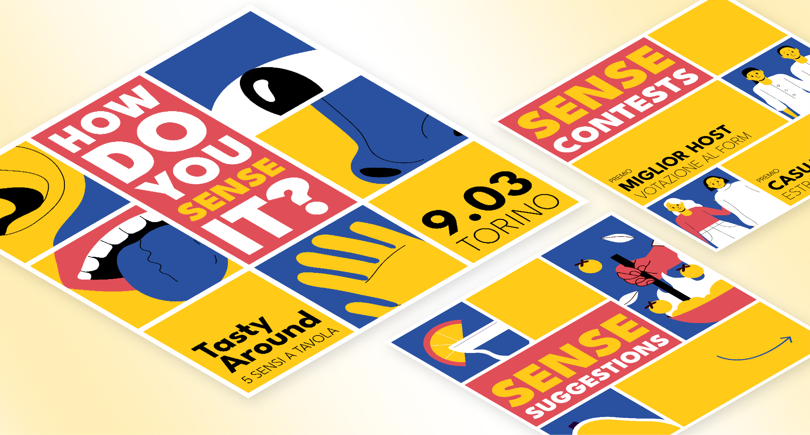

Project type
In an association
Collaborative
Tools
Adobe Illustrator
Duration
Almost 3 months (each time!)

When I arrived in Turin, I became aware of this event, I attended
once, and from then on, I asked to be involved in the
organization, primarily as a graphic designer.
People sign up in pairs, needing to have a house available.
The event, always held on Saturdays, is divided into three times:
apetizer, main course, and dessert. Additionally, after dessert,
everyone heads to a final location where there's a
party with all the participants.
Each pair is assigned one of the three times, during which they
have to host two other couples in their own house. During
the remaining two times, they have to visit other houses and be
guests of other couples.
The algorithm works to adjust the route based on the location of
the final party venue. This way, travel is facilitated: for the
aperitif, participants will be farther away, getting closer for
the main course, and the dessert will be fairly close to the final
party.
Got it? Or do you need a little drawing? Okay
:)
Each TastyAround has a theme, and the one I present on this page
is "How do you sense it? Five senses at the table."
The choice is to use three colors symbolizing the primary colors,
along with black and white, precisely to enhance the concept of
sensoriality.
The food prepared at home, according to the assigned moment, must
be related to the assigned theme!
Past editions in which I collaborated
I collaborated as a graphic designer in past editions, of which I
attach two examples.
In one, the theme was "Back to the Future," where
participating couples were assigned different historical periods
to cook according to.
Another theme was "Made in Italy," so each participant was
assigned an Italian region to base their courses on.
It's really nice to see the free interpretation and creativity
that people bring to the table.